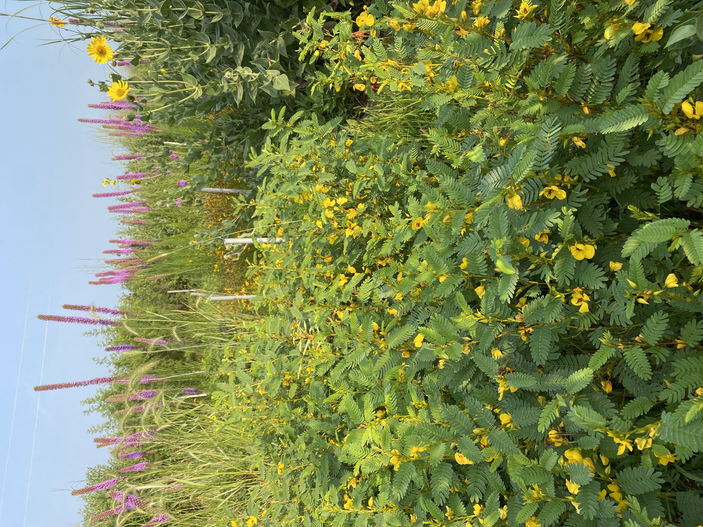
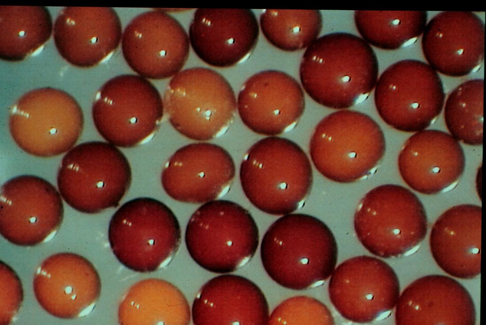
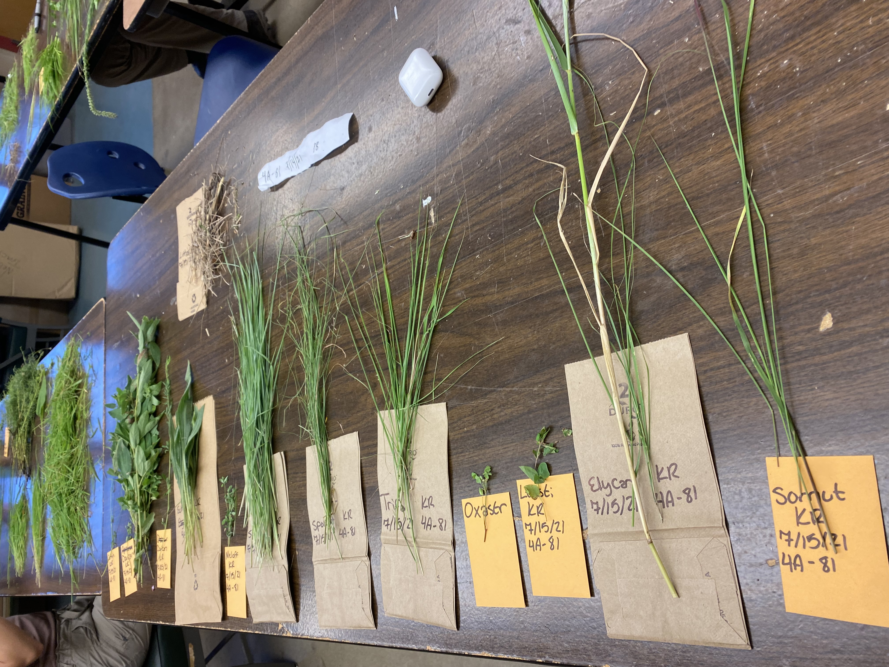
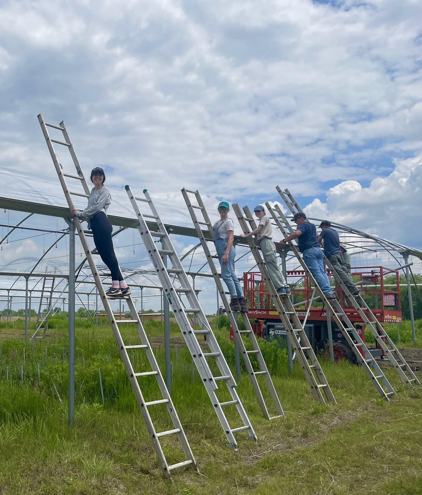

Field & Lab Research · Kansas Biological Survey · 2021 – 2022
Bever-Schultz Ecology Lab
Research Assistantship

From 2021 to January 2022 I worked in the Bever-Schultz ecology lab (part time during the school year and full time in the summer) as a research assistant under the supervision of Dr. Jim Bever. I assisted with ecological research studying plant and microbial interactions.
Visit the Bever-Schultz LabResearch Focus
Specifically, the research focused on:
01 — Soil Community Dynamics
Plant-Soil Feedback & Biodiversity
How host plant presence affects soil community composition and how that altered soil community feeds back to impact host plant health. Additionally, how this negative feedback cycle scales up to influence broader plant community biodiversity.

02 — AMF Restoration Ecology
Arbuscular Mycorrhizal Fungi
How the presence of AMF fungi affects biodiversity restoration efforts on post-agricultural prairie landscapes.

Responsibilities
In this lab my responsibilities included:
- Maintained research plots
- Performed non-destructive vegetation sampling
- Identified and sorted plant species
- Extracted spores from soil samples
- Collected and entered data

